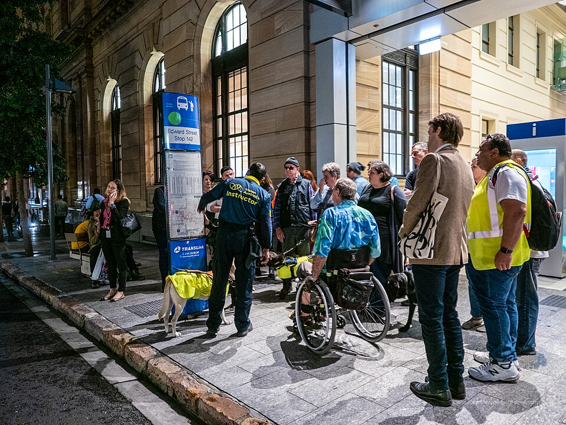

사회 · 교통
세움시, 심야 택시 할증 시간 30분 앞당긴다
시 교통정책과는 다음 달 1일부터 할증 시작 시각을 조정한다고 밝혔다.
세움시 교통정책과는 28일 심야 택시 할증 시작 시각을 다음 달 1일부터 오후 11시 30분으로 조정한다고 밝혔다.
교통정책과가 낸 자료에 따르면 지난해 같은 기간 심야 승차 거부 신고는 1,240건이었다.

시는 조정 뒤 석 달간 신고 건수를 집계해 효과를 확인할 계획이라고 설명했다.
세움시의회 교통위원회는 다음 달 12일 관련 조례안을 심의한다.
오세린 기자 srim@testjournal.example
ⓒ testJournal. 무단 전재 및 재배포 금지.